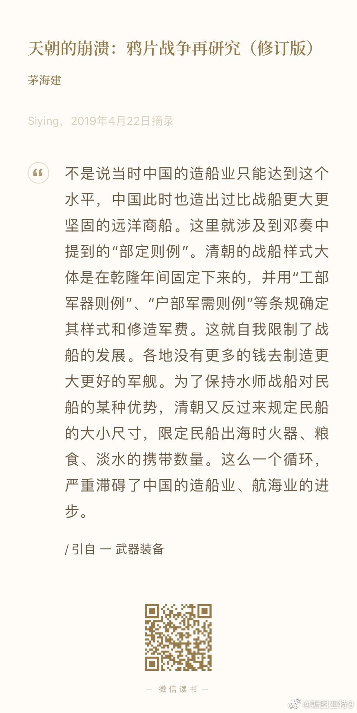
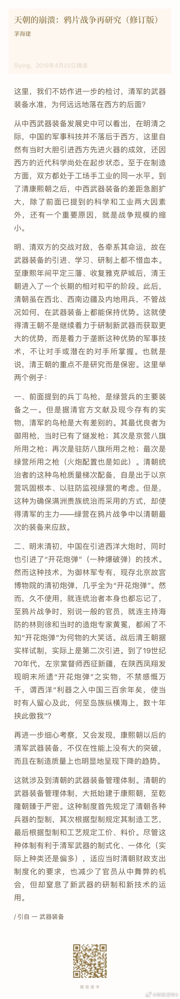
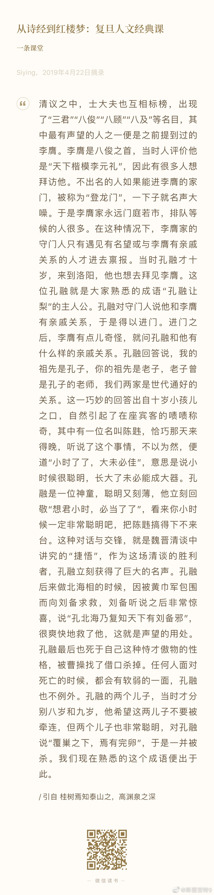

所以大清国的发展方向是内战内行，外战外行。关键要限制民船发展来保证军舰能巡逻的了；关键不是发展科学技术而是保证军用技术保密不给对手用。所以大清国镇压起国内的敌人随便就整得服服帖帖的，一见欧洲列强全完蛋。 
孔融应该是中国历史上的第一神童了吧。“小时了了，大未必佳”的典故出于有人和孔融斗嘴。说起来，孔融算得上“小时了了，大未必佳”吗？一方面，孔融算建安七子之一，也一度割据一方。按照现在的标准，怎么也算是个大V加厅局级干部，应该算是混的不错了了。另一方面，孔融好像并未留下什么传世名作，政治上也没混出什么名堂，还稀里糊涂就死了，和魏晋风度的诸多大家以及那个乱世的许多豪杰来说，实在不能说怎么样。更关键的是，比起世上第一神童的，他的成就好像的确有点落差。